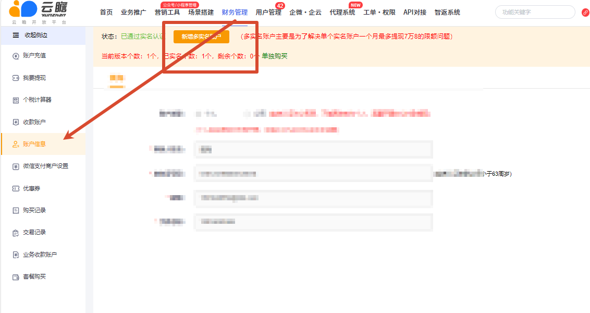
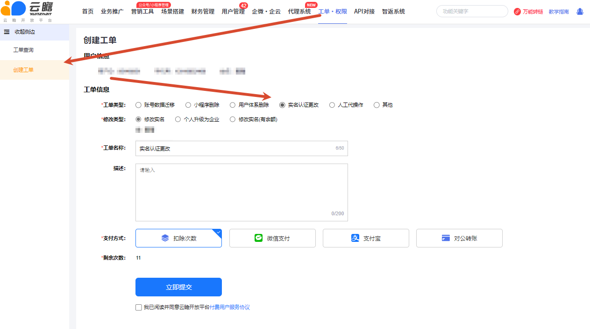

如何注册账号？
电脑端访问 www.yunzhanxinxi.com，手机端访问 pub.yunzhanxinxi.com，使用手机号注册；微信内也可搜索“云瞻助手”小程序完成注册。
覆盖注册入口、登录方式、个人与企业实名、实名变更、子实名、手机号和微信换绑、账号注销等全部常见问题。
电脑端访问 www.yunzhanxinxi.com，手机端访问 pub.yunzhanxinxi.com，使用手机号注册；微信内也可搜索“云瞻助手”小程序完成注册。
电脑端、手机网页端和“云瞻助手”小程序均可登录。更换微信但没有办理换绑时，仍可先用手机号或账号密码登录。
源文档口径为“不可以”。遇到多团队、多收款主体或原账号无法登录，不要直接重复注册，应先判断使用子实名、换绑或账号迁移。
电脑端登录后进入【财务管理】→【账户信息】填写；小程序进入【我的】→右上角设置→【实名认证】。企业实名需提交相应资质并等待财务审核。
不影响取链和推广，但会影响账单查看、入账和提现。实名认证用于确认资金交易主体；未实名无法正常完成结算。
资金结算需要核验真实收款主体。证件、手机号和收款账户等敏感资料只能通过正式页面或工单提交，不应发送到公开群聊。
实名信息已进入打款链路后不能随意修改。确需变更时，在电脑端【工单·权限】→【创建工单】选择“实名认证更改”，按页面要求提交付费工单，审核通过后重新填写。
重要影响：个人实名升级为企业实名后，原个人实名时期的账单、提现记录可能不再显示，且源文档明确记录“企业实名不能再降为个人”。操作前必须完成对账和数据留存。
原文提供两条路径：新增子实名账户，或提交“实名认证更改”工单。优先根据是否只需增加收款主体来判断；不要为了临时提现轻易替换主实名。


源文档提到子实名用于解决“单个实名账户每月最多提现 7.8 万元”的旧限制。该金额属于易变化规则，答复前必须以当前提现页和财务通知为准。
需要联系平台顾问，由技术协助解绑。解绑后重新登录，按提示使用新微信扫码完成绑定。仅仅换了微信、暂时不换绑时，可先使用手机号或密码登录。
联系平台顾问，由技术协助注销，并按要求再次确认。注销是不可逆操作，源文档记录：注销后原手机号和微信号不能再用于注册或登录云瞻，小程序内注销的微信也无法恢复使用。
先导出订单、账单和提现记录，确认余额已处理、绑定业务已迁移、公众号或小程序等资产已解除关联，再进行最终确认。